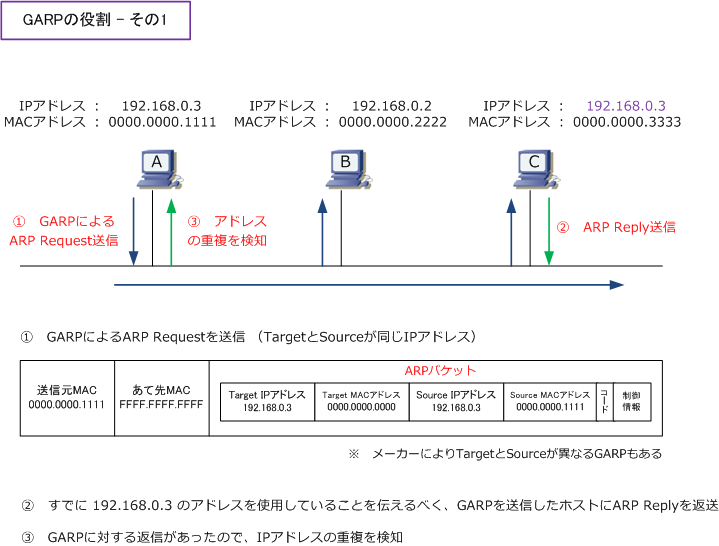
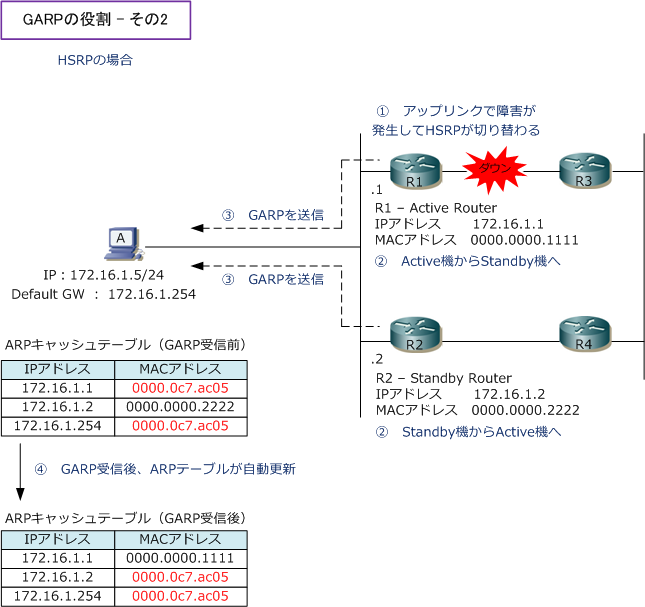

GARP
GARPとは
GARP（Gratuitous ARP）はARPパケットの1つであり、以下の2つの役割を持っているプロトコルです。
① 自分自身に設定するIPアドレスが重複していないかどうかを検出 ② 同一セグメントのネットワーク機器上のARPキャッシュを更新させる
GARPとは、自分自身に設定するIPアドレスに対するARPのことです。通常のARPでは宛先のIPアドレスに 対して宛先のMACアドレスを得ようとしますが、GARPでは自身のIPアドレスに対して自身のMACアドレス を得ようとします。自身のMACアドレスは知っているはずなのに、なぜ、自身のIPアドレスに対してARPを 行うのかは、上記の2つの役割を実現するためです。では、その2つの役割を以降で詳細に解説していきます。
GARPの役割 - その1
GARPにより、自分自身にIPアドレスがアサインされる際に他のホストが同じIPアドレスを使用していないか どうかを確認することができます。以下の①～③の流れとなります。Windows Server 2012 や Windows 8 以降では、デフォルトの動作でアドレス重複確認のためのARPとGARPを送信します。

Windows Server 2008R2、Windows 7では修正プログラム（KB2811463）を適用することでアドレス 重複確認のためのARPに加えて、SPAに自身のIPアドレスをセットしたGARPも送信するようになります。
GARPの役割 - その2
GARPには、アドレス重複の検出の役割だけでなくもう1つの役割があります。GARPは、同じセグメントの ネットワーク機器上のARPキャッシュを更新することによって、VRRPやHSRPなどで切り替わりが発生した 機器とすぐに通信できるようにするためにも使用されます。

ARP、RARP、GARPの違い
| ARP / RARP/ GARP | 説明 |
|---|---|
| ARP | ・ 相手のIPアドレスからMACアドレスを得るためのプロトコル |
| RARP | ・ MACアドレスから自身のIPアドレスを得るためのプロトコル |
| GARP | ・ 自身のIPアドレスが重複していないかどうかを検出するプロトコル ・ 同一セグメントのネットワーク機器上のARPキャッシュを更新させるプロトコル |
← IPとは ARPテーブル、ARPキャッシュ →